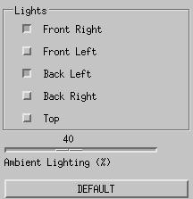
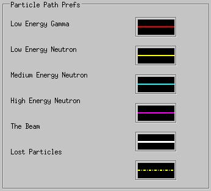
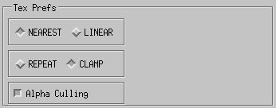

SERA:
Simulation Environment for Radiotherapy
Applications
User's Manual
Version 1C0

SERA:
Simulation Environment for Radiotherapy
Applications
User's Manual
Version 1C0

6. Three-Dimensional Reconstruction (sera3d)
The main interface for sera3d is composed of 4 main parts: the menubar; the message bar; the main rendering window; and the tools.
Figure 6.1 shows the sera3d File menu.
Figure 6.1. File menu selections.
To begin a reconstruction, the user must first load a univel file pair (.uv/.uvh), which is created by seraModel. This is done with the Load Regions menu item. The cascading menu off of Load Regions will remember recently used files. A file select box is also available under the cascading menu. Other menu selections will remain grayed out until regions have been loaded.
Once the regions are loaded, other file types my also be loaded. These include the medical images, which can be loaded with Load Images (QIM/QHD), particle track information generated by seraMC with the Load Paths (PP) option, and either single or 3D isodose contour files, respectively, with the Load Single Contour File and Load Full Contour File selections. The Launch menu item, which is present in all modules, allows launching of the other modules of the SERA package. Choosing the Exit button closes sera3d.
The selections available from the Options menu are shown in Figure 6.2. The Options Menu gives various options for controlling the interface.
Figure 6.2. Options menu selections.
The Fast Rotation option applies to the reconstruction. When using smooth surfaces or solid rendering, the rendering speed is not always interactive (especially without hardware accelerated graphics). To dramatically increase the rendering speed of rotations, Fast Rotation is used. When rotating an object, the object may be rendered as a wireframe, or not at all, to keep the rendering interactive. The choices for Fast Rotation are:
Sera3d has the ability to show multiple rendering windows. This feature is called multi-view. When this is enabled, there will be three small rendering windows to the left of the main window, each through a different camera. Two options control the multi-view renderings. Multi-View Window Size sets the size of the three multi-view rendering windows, and Multi-View simply toggles the multi-view feature on and off. Messages toggles the message bar, just below the menubar, on and off.
The Preferences menu will simply bring up the preferences dialog window. The preferences dialog is covered later in this section of the manual.
The Help menu at the top right of the
menu bar provides context-sensitive help. To use it, simply click
the Help item, and the cursor will turn into
a question mark. Then, click the question mark on the item about
which you have a question. This will pop open a help window on that
item.
The sera3d message bar is shown in Figure 6.3 below.
Figure 6.3. Message bar for sera3d.
The message bar in sera3d provides interactive help on the various
controls, as well as status information during rendering and reconstruction.
As the mouse pointer moves across the various tools in sera3d, the message
bar reports the name and use of the tool. The center of the message
bar displays the messages, while the right side of the message bar displays
the name of the univel file in use.
6.3. The Main Rendering Window
The main rendering window is the large window
in which sera3d renders the reconstruction. Clicking the right mouse
button in the window brings up a popup menu which switches between using
the mouse and using sliders to rotate the reconstruction.
The sera3d Tools panel contains the various mechanisms for manipulation of data displays. The Tools panel is shown in its default state in Figure 6.4.
Figure 6.4. The sera3d Tools panel in its default configuration.
The tools for sera3d are all laid out to the right of the main rendering window. The top of the tool bar has the Bodies window. The Bodies window lists all of the segmented regions in the current univel file. All of the listed bodies can be toggled on/off simply by clicking on their name in the Bodies window. In the current image all bodies are toggled on (default). When a body is toggled off, it is removed from the rendering window. Toggling bodies on and off can be done at any time. Below the Bodies window are the Control Panel buttons. The Control Panel buttons switch between the available control panels. The Control Panel is located below the double divider, beneath the Control Panel buttons.
In the example shown in Figure 6.4, the Control Panel begins with the Style panel and continues to the bottom of the Tools panel. The button corresponding to the active panel is depressed - in this case, the first panel (viewing panel). Each panel provides various tools in sera3d. The Control Panel buttons are all labelled with icons. As the mouse moves over an icon, the message bar displays the meaning of the icon. The buttons, in the order of their appearance on the Tools panel, are as follows:
Viewing
Color
Transparency Lighting
Axes
Clipping Polygon
Particle Tracking Slice
Contour
Mouse
View Parameters Beam
Unused Texture Mapping
All of the control panels and their tools are explained in the subsequent subsections.
Figure 6.5 shows the panel configuration for the Viewing panel.
Figure 6.5. Viewing panel layout.
The top of the Viewing panel has four view style buttons. These control the rendering style for the segmented bodies. The first is the Wireframe rendering style (default). Next is the Solid Outline style. The Solid rendering style is the third, and the Polygonal Surfaces style is the last button. The greatest image fidelity is provided by the polygons, but the wireframe provides the fastest rendering performance. The other styles offer degrees of compromise between the two.
Below the view style buttons is the Global Scaling slider. The slider allows the rendering to be scaled to a larger or smaller size. Below and to the left is the Camera panel. This selects the camera angle for the rendering in the main window. The default camera angle is not in this list. The Reset Viewing button resets the scaling and camera to their default values, and sets the rotation of the rendering back to its original position. The Auto Rotate feature will start and stop the rotation of the rendering. The four arrows control the direction of the auto rotation. The center button stops the auto rotation, while the two arrows below control the speed of the rotation.
The Color panel layout is illustrated in Figure 6.6 below.
Figure 6.6. Layout of the Color panel.
The Color panel sets the colors of the rendered regions. The Body menu at the top provides the list of bodies available in the univel file; the selected body is the body which is changing color. Below the body menu is a Color Presets list. This list is simply a few preset colors for various regions. By clicking on a preset color, the sliders and color swatch will be updated to the preset values. The color swatch displays the current color set by the red, green, and blue sliders. Finally, to apply the selected color to the selected body, the Apply to Body button is used.
The layout of the Transparency panel is illustrated in Figure 6.7 below.
Figure 6.7. Layout of the Transparency panel.
The Transparency panel is very similar to the Color panel. The current body for which to set the transparency is selected in the Body menu. The opacity wanted for the current region is then selected by using either the Opacity Presets list or the Opacity slider. Then the Apply to Body button applies the opacity setting to the selected body.

Figure 6.8. Layout of the Lighting panel.
The Lighting panel, shown in Figure 6.8, controls the lighting of the rendering. The Lighting panel will only activate when the polygon view style is used. Five lights are available in sera3d, and multiple lights may be illuminated simultaneously. These are listed in the Lights frame. Below the Lights frame is the Ambient slider. This sets the fraction of ambient light in the rendering. The Default button returns the lighting controls to their default positions.
Figure 6.9. Layout of the Axes panel.
The Axes panel, shown in Figure 6.9, allows the user to inlay the axes into the rendering. The icons at the top represent the type of axes to inlay. The first axes are the full set Inferior-Superior, Posterior-Anterior, and Right-Left. The second and third represent the positive quadrant, with the third icon providing a bold representation of the axes. Below the icons is the Axes Labels toggle. This toggles the labels of the axes in the rendering.
Figure 6.10. The Clipping panel layout.
Sera3d provides two clipping planes in each orthogonal direction. A clipping plane is used to "cut" away portions of the rendered regions. The Clipping panel, illustrated in Figure 6.10, contains a Clipped Bodies list. The Clipped Bodies list shows all of the segmented regions for the current univel file. The buttons on the list toggle the clipping of a specific body by the current clipping planes. If a body is checked, it will be clipped; if it is not checked, no clipping planes will cut it. To set the clipping planes, bring up the clipping popup window as seen in Figure 6.11., using the Set Clipping button
Figure 6.11. The Clipping popup widget.
The Clipping Popup provides the tools necessary for controlling the 6 clipping planes. At the top is the option to clip interactively. When clipping is performed interactively, as the sliders are moved, the clipping is updated in the main rendering window. At the same time, the draw planes toggle will display the clipping planes in the main rendering window.
The three clipping directions allowed are Axial, Coronal, and Sagittal. To clip in a particular direction, first select that direction from the three push buttons. The panel below will switch to the appropriate direction. At the top of the clipping panel, there is a toggle button, which is labelled with the selected clipping direction. In the example shown in Figure 6.11, this is labelled Axial Clipping. This button will toggle the clipping planes - i.e., it will activate the clipping process. Below the toggle are labels showing the current position of the two clipping planes. Each clipping plane has a corrresponding slider. By moving the slider up or down, the label representing the same clipping plane is updated to show the position of the clipping plane. If the toggle button is in the depressed position, clipping will proceed continuously as the sliders are moved. There is also a text box available for typing in a specific clipping location. For example, to clip everything above 98.35 in the axial direction, type 98.35 into the text box, and press the Above button. This will set the slider to the appropriate position.
Below each slider is a toggle called Cap. If this toggle is selected, the corresponding clipping plane will be capped with the medical image data, if the images have been loaded.
Clipping in multiple directions is also supported. To clip in the sagittal direction as well as the axial direction, turn on and set up the axial direction clipping information, then press the Sagittal push button, enable the sagittal direction, and set the sliders to the desired position.
When clipping is performed interactively, the Done button simply closes the window. If clipping is performed non-interactively, the Done button will apply all the clipping settings to the rendering.
Figure 6.12. The Polygon panel layout.
The polygon panel, as shown in Figure 6.12, has only one menu. This menu controls which algorithm will be used when creating the polygonal surfaces for the polygonal view style. The options for the algorithm are:
Figure 6.13. The Particle Tracking panel.
The particle tracking panel controls the rendering of the loaded particle tracks. The particle tracks are output from the seraMC calculations, and stored in the lost.pp or tracks.pp file.
The Display Particles button toggles the display status for all particles in the rendering. The antialiasing button toggles the antialiasing mode. Antialiasing is used to smooth the particles tracks in the rendering.
Below the two toggles is the panel of particle track types. To the left of each type name is a toggle and a color box. The toggle controls the rendering of that particular type. The color box shows the current color and line style of the particle track type. Clicking on the color box will bring up a small dialog, allowing the user to change the color and line style.

Figure 6.14. The Slice panel layout.
The slice
panel, displayed in Figure 6.14, provides the tools for inlaying a single
medical image slice into the rendering. To inlay medical data, the
images must first be loaded from the file menu.
Once the images are loaded, they are built into a texture map. From
the texture map, the medical slices can be inlaid into the rendering.
The Inlay Slice
toggle controls the display of the slice(s) in the rendering. The
direction of the slice can be set by selecting it from the direction panel.
The choices are Axial,
Coronal,
or Sagittal.
The External Window
button brings up an external window containing the 2-D slice which is currently
inlaid. This option is currently unavailable
for the SUN systems.
At the bottom of the Slice panel is the slice slider. This slider controls the position of the inlaid slice. Above the slider is the label reporting the slices' position. The slider is interactive. As the slider is moved, the slice is moved in the rendering, and the label displays the position of the slice.
Figure 6.15. The Contour panel layout.
The contour panel, shown in Figure 6.15, is used to display the dose contours output by seraMC. The displaying of the dose contours is done in two ways. The first method is to colorwash the medical image data. With this method, the inlaid slices will be displayed with the contour rendered as colorwashed regions on the image slices. The Outlines Only button reduces the colorwash to outlines of the isodose contours, but this is only active when the Color With Doses button is also activated. The second method of displaying the dose contours is to build contour surfaces.
The dose contours must first be loaded before they can be displayed. They are loaded from the file menu; each contour data file may be loaded singly or the 3D contour data file may be loaded in one step. To set which contour levels to display, click on the Edit Contour Levels button to obtain a small popup window. Simply typing in the contour levels, separated by spaces, will update the legend for the new levels.
Below the Outlines Only toggle is the Dose Component menu. This determines which dose component of the contours will be displayed. These are the same components produced by the seraMC dose calculation. The Colorwash Legend shows the current levels to view, as well as their corresponding colors. The color for a particular level can be changed by clicking on the corresponding color box. Finally, the Apply Legend button will colorwash the slices with the current settings.
To build the contour surfaces, press the Build Contour Surfaces button at the top of the Contour panel. The surfaces are built according to the levels and colors specified in the legend. Once the surfaces are built, they are treated as additional bodies. They will be listed in the Bodies List at the top of the Tool bar. They will also appear in the bodies menu of the color and transparency panels.
The layout of the Mouse panel is shown in Figure 6.16, below.
Figure 6.16. The Mouse panel layout.
The two icons at the top of the panel switch the rotation control method between the mouse buttons and sliders. The left icon is for the sliders, and the right is for the mouse. When the slider rotation is activated, the sliders will appear below the main rendering window.
The rotational locks are used to prevent the bodies or clip planes from being rotated. For example, the bodies can be locked, which means that they cannot be rotated. If a clipping plane is inlaid, the clipping will rotate around the locked bodies, cutting the bodies as it rotates.
The View Parameters panel is shown below, in Figure 6.17.
Figure 6.17. The View Parameters panel.
The frame at the top switches between double buffering and single buffering. With double buffering, the rendering is done offscreen, and then the rendering frames are swapped. This provides smooth rotations without any flashing. With single buffering, the rendering is done directly to the screen. When rotating in single buffer mode, the screen flashes as it re-renders. Single buffering is handy for watching the rendering. For example, when volume rendering, it is beneficial to be in single buffered mode. This allows the reconstruction process of stacking slices to be viewed interactively.
The second item is the toggle for the Frame Rate. When toggled on, the frame rate is displayed in the bottom left corner of the main rendering window. The Test Polygon Speed button runs a small test to give an approximation of the rendering speed of your system. The Show Center Mass for Bodies will display the center of mass for each of the segmented regions in the univel file.
Figure 6.18a. The Beam panel layout.
The Beam panel, shown in Figure 6.18a, is used as an aid to position the beam/patient, or simply to view along the beam specified in the particle track file. The Beam in Use menu at the top switches between the beam from the particle track file and the interactive beam. To switch the view in the main rendering window to a beam line view, toggle on the Beam Line View button. The icons on the right side of the panel provide several different crosshairs for use in viewing along the beam line.
The two sliders below the Beam Line View panel control the position along the beam line. The left slider will slide the camera view forward or backwards along the beam line. The right slider is used for the beam slice. A beam slice is an inlaid medical image slice normal to the beam. To inlay a beam slice, toggle on the Inlay Beam Slice toggle button. The right slider then moves the position of the beam slice along the beam line. The Clip With Beam Slice will clip the regions at the position of the beam slice.
To control the position of the interactive beam, the I-Beam Controls button brings up a dialog like the one shown in Figure 6.18b.
Figure 6.18b. The Interactive Beam Control Dialog
The position of the interactive beam can be set using the three sliders, or the values can be entered into the text boxes labelled P-A, R-L and I-S. As the position of the beam changes, the values in the text boxes labelled Zb, phi and Theta are also updated. These values correspond to the parameters in the seraCalc interface with the same names. The interactive beam can also be set by supplying these values directly.
When Beam Line View is toggled on, the option Use Aperture can be selected. This provides a small ring in the center of the main rendering window, which gives a measureable ring for examining the regions through a given beam diameter. When Use Aperture is enabled, the rendering switches to a parallel projection, allowing for accurate measuring with the ring aperture. Because of the parallel projection, the position of the slider along the beam will not affect the rendering. The sizes of the aperture and rendering window can be set with the Aperture Settings button. When Use Aperture is enabled, the aperture and window sizes are displayed in the top left corner of the main rendering window.
Figure 6.19. The Texture Mapping panel layout.
The Texture Mapping Panel provides the tools for controlling the texture mapping. The first panel determines how the texture will be applied to the polygons. Nearest will do a direct mapping from the nearest value in the texture map. This is the faster method, but it will produce a blocky appearance between the slices. Linear will linearly interpolate between the 8 nearest neighbors in the texture map, providing a smoother slice.
The second panel determines what to do with the polygons that extend out of the texture map. With the Repeat option, the texture will repeat for polygons outside of the texture map. The Clamp option will clamp at the border value for the polygons outside of the texture map.
The Gamma Correction toggle will apply a gamma correction function to the gray values of the images, brightening them. The Alpha Culling button toggles the alpha culling. Alpha culling is used to remove gray levels from the polygons. For example, if a slice is inlaid without alpha culling, the whole slice, including the buffer, will be inlaid into the rendering. If Alpha Culling is enabled, the buffer (i.e., dark values) will be removed, leaving just the image itself. The slider under the Alpha Culling toggle sets which gray values will be culled. The values culled are less than the current slider value.
Volume Rendering gives the ability to
reconstruct 3D structure directly from the medical images. To volume
render, simply press the Volume Rendering
button. At the bottom of the panel is the Texture
Polygonal Bodies toggle. When the viewing style is polygonal,
this button will toggle the texture mapping of the surfaces. This
is useful when the colorwashed dose contours are loaded; texturing the
surfaces will colorwash the regional surfaces with the dose contours.
An example would be viewing the surfaces of the tumor and being able to
see the 95% dose level directly on the surface.
Figure 6.20. The Preferences popup window.
The Preferences window, shown in Figure 6.20, is selected under Preferences in the Menubar. This window is used to set the commonly used items in the program to suit the user's preferences. When the preference window is opened, all of the items in the window are set to their current settings in the program. Once the preferences are saved (using the Save button), these become the defaults for the program. When the program starts, it sets all its parameters to the user specified preferences. Note that changing the values will only apply to the next invocation of sera3d, not to the present session.
The preferences are broken into separate panels.
The window size preference panel can be seen above (Figure 6.20). It has the settings for the window sizes and background color, which are also found in the Options menu.
Figure 6.21. The Color Preference panel.
The color preference panel, shown in Figure 6.21, has a toggle for the body coloring information. The colors for the regions are stored in the .uvh file. To use the stored colors, simply check this toggle. If prefered, the user can specify default colors for the regions. Uncheck the toggle and the color presets for each body will be used.
Figure 6.22. The Axis Preference panel.
The axis preference panel, seen in Figure 6.22, is the same as the Axes Control panel in the main interface.
Figure 6.23. The Mouse Preference panel.
The Mouse preference panel (see Figure 6.23) sets the prefered rotation method (sliders or mouse). This has the same function as the Mouse panel in the main interface.

Figure 6.24. The Particle Paths Preference panel.
The Particle Paths preference panel (see Figure 6.24) sets the prefered line types and colors for the particle tracks.

Figure 6.25. The Texture Preference panel.
The Texture preference panel, shown in Figure 6.25, allows the prefered texturing parameters to be set.
Figure 6.26. The Miscellaneous Preference panel.
The Miscellaneous preference panel, shown in Figure 6.26, has a variety of items. The Rendering Quality panel is used to set the quality of the first 3 view styles (wireframe, solid outline, and solid rendering). In general, as the quality of the rendering is lowered, the speed of the rendering improves. When running on machines without hardware acceleration, it is better to use a lower quality.
The Polygon Quality is very similiar to the Rendering Quality, but this applies to the polygon surface view style. Again, without hardware acceleration, a lower polygon quality should be used. This lowers the number of polygons created for the surface representation. The Polygon Algorithm type is the same menu as on the Polygon Control Panel.
The Messages toggle controls the display
of the message bar at startup. The Fast Rotation
menu is the same as in the Options menu.
The Measure Units box sets the units, either
cm
or mm, for all measurements in sera3d.